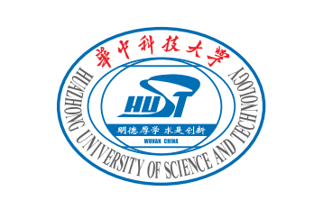
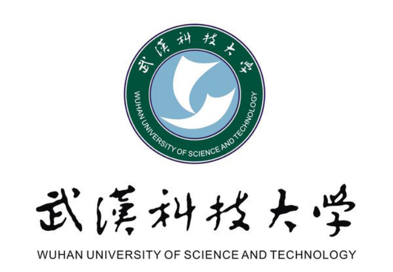

Huazhong University of Science and Technology
Associate Professor
Artificial/Computational Intelligence for Electrical and Electronic Engineering.

Curriculum vitae
Associate Professor, Associate Head of Department
School of Electrical and Electronic Engineering, Huazhong University of Science and Technology
Artificial/Computational Intelligence for Electrical and Electronic Engineering.
chenghehust [at] gmail.com
Associate Professor
Artificial/Computational Intelligence for Electrical and Electronic Engineering.

Post-doc Research Fellow
Large-scale optimization, neural architecture search, airfoil design.
Visiting Scholar
Visiting scholar engaged in large-scale multiobjective optimization supervised by Professor Xin Yao.
Visiting PhD Student
Visiting student engaged in surrogate-assisted many-objective optimization supervised by Professor Yaochu Jin.
Doctor of Philosophy
Control Science and Engineering. Focus on many-objective optimization and its applications supervised by Professor Linqiang Pan.
Bachelor of Science
Automation.
